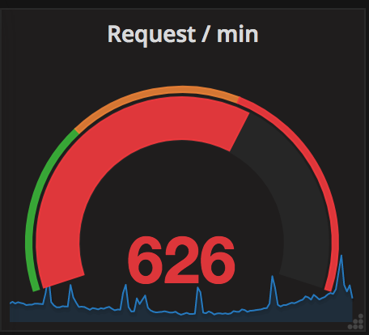
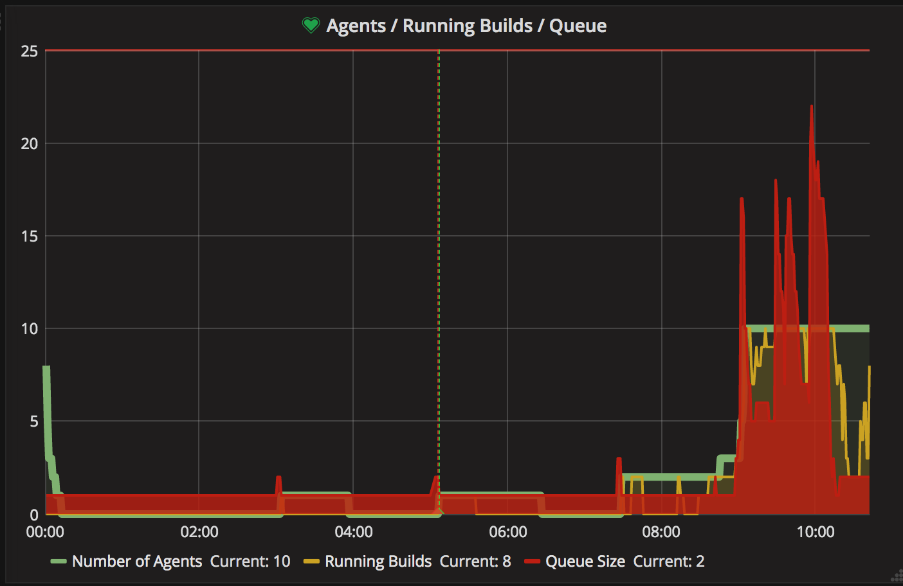
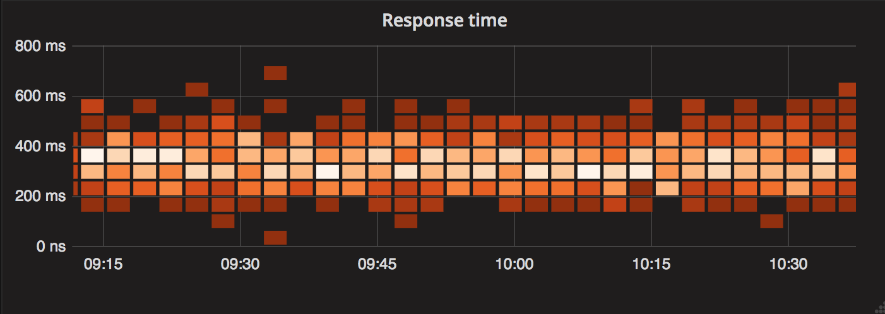
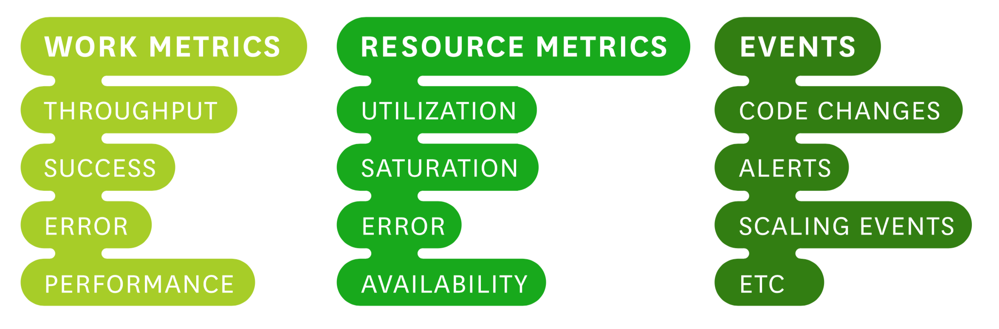
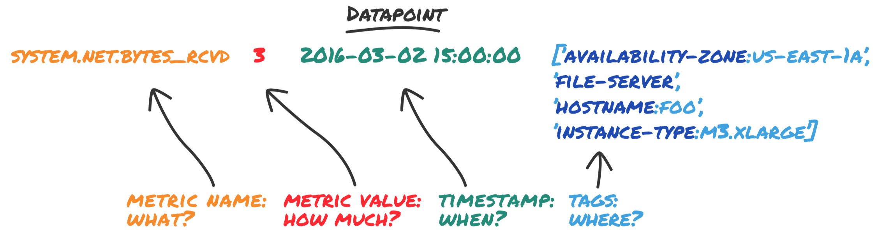

Build
Measure
Learn
Introducing monitoring with metrics
Rickard von Essen
rickard@diabol.seContinuous Delivery and Cloud Expert - Diabol
rickard-von-essen
@rickard_v_essen
rickard_v_essen
9106 A6EA 99B6 9DAB 8C1F 4E9E E0C0 3273 8887 6CBA

History of Monitoring
No monitoring /
Direct monitoring
Host Centric Checks
Nagios etcApplication/System Centric
Monitoring through metricsMetrics Tauxonmy
Measurement Classes
Measurement Classes
- Meters - Rate Per Second

Measurement Classes
- Gauges (Counters)
Instant Snapshot, Queue Length

Measurement Classes
- Histograms - Min, Max, Mean, 75th, 90th, 95th, 98th, 99th, and 99.9th Pcts

Measurement Classes
- Timers - Meter and Histogram
Measurement Classes
- HealthChecks - Ok / Fail

Types of Measurement
Tags
Levels of Alerting Urgency
- Record
- Notify
- Page
Data for Alerts
TICK
- Telegraf
- InfluxDB
- Chronograf
- Kapacitor
Overview

Collect

Analyze

Monitor/Act

Grafana
Grafana
The analytics platform for all your metrics“Grafana allows you to query, visualize, alert on and understand your metrics no matter where they are stored. Create, explore, and share dashboards with your team and foster a data driven culture.”
Grafana
- Visualize
- Alert
- Unify
Reading
- Datadog - Monitoring Modern Infrastructure free
- James Turnbull - The Art of Monitoring